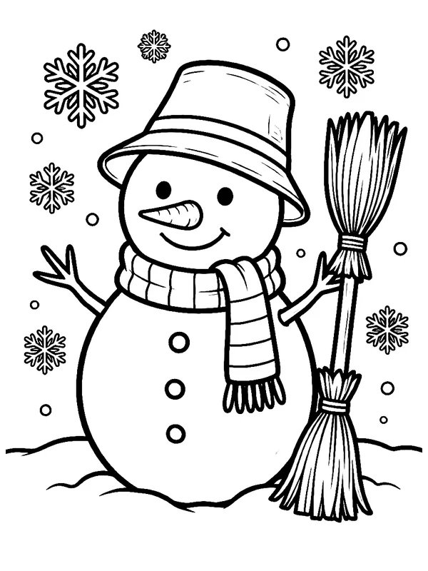
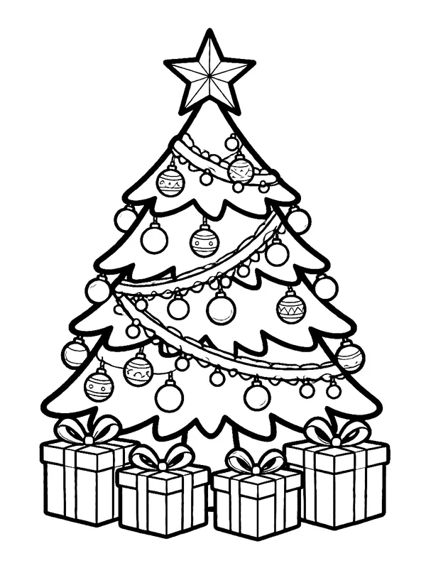
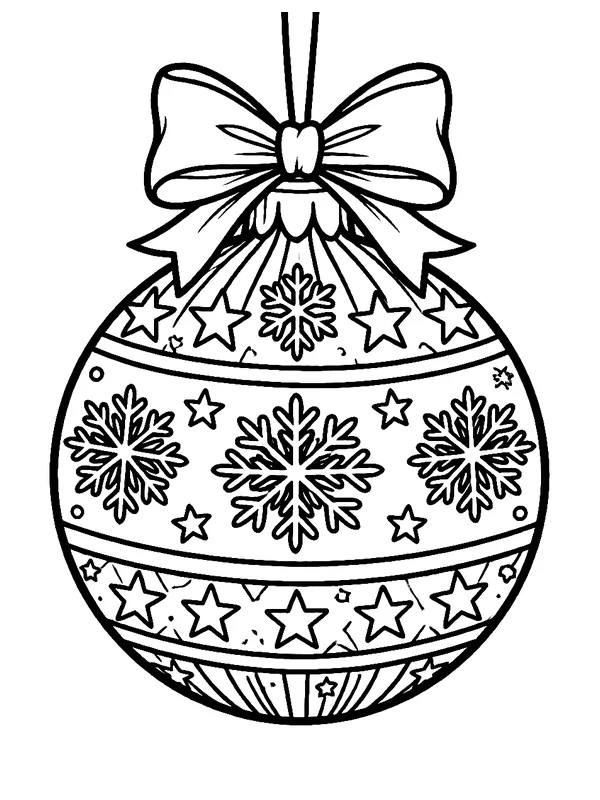
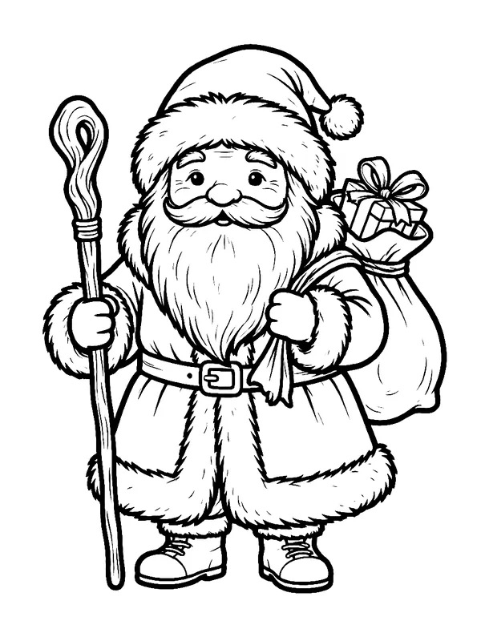
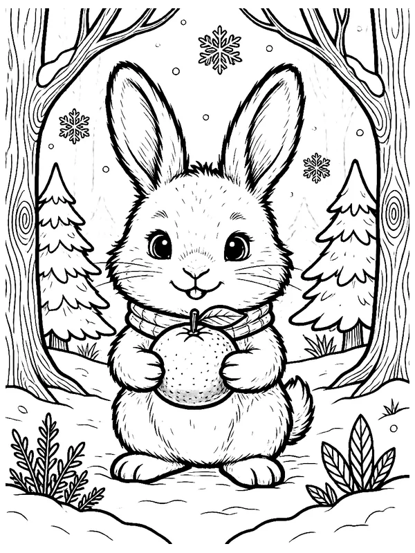
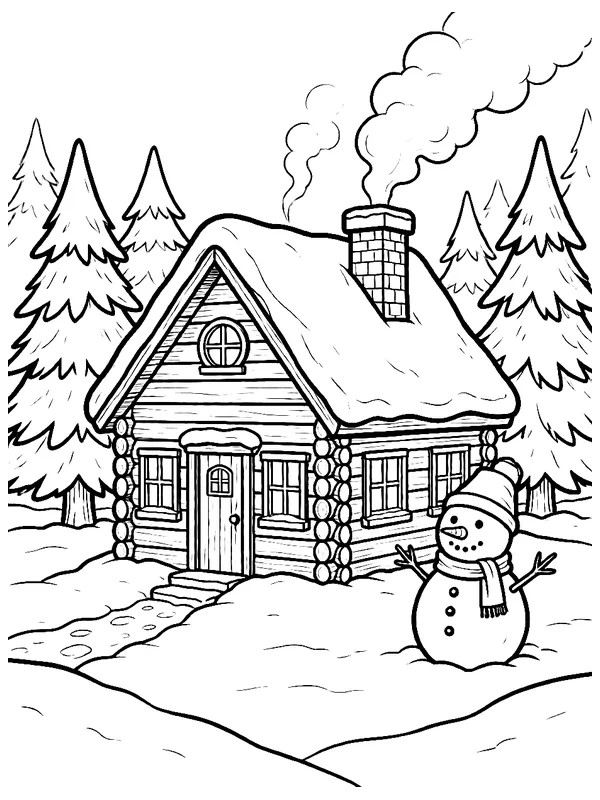
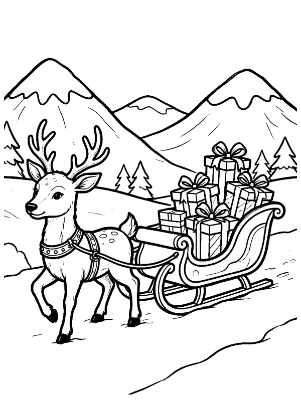
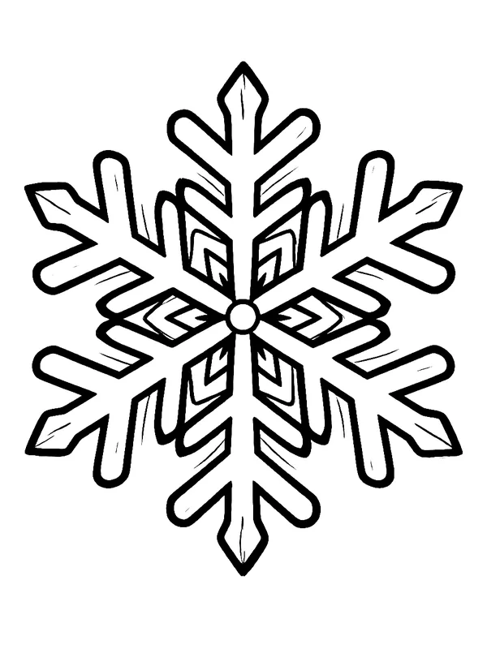

Новогодние загадкиДля детей 3–7 лет. Прочитайте вслух, а ответ откройте кнопкой. Если малыш молчит, подскажите первую букву.
Загадка 1
Маленький, оранжевый, пахнет Новым годом. Снимешь одёжку, а внутри дольки, как лодочки.
Мандарин
Загадка 2
Висит на ёлке, но это не шарик. Светится по вечерам, а огоньки у неё разноцветные, как конфетки.
Гирлянда
Загадка 3
Ушки длинные торчат, глазки-бусинки глядят. Шубка белая, как снег, а живёт в лесу. Кто же спрятался от всех?
ЗайчикЗимой заяц-беляк и правда становится белым.
Загадка 4
Его лепят из снега, вместо носа дают морковку, а весной он убегает ручейком.
Снеговик
Загадка 5
Зимой и летом одним цветом, а под Новый год наряжается в шары и огоньки.
Ёлка
Загадка 6
С неба падает, на варежку садится. У каждой свой узор, а в тёплой ладошке она тает.
Снежинка
Загадка 7
Растёт вниз головой, днём на солнце плачет каплями, а ночью снова замерзает.
Сосулька
Загадка 8
Две сестрички: у каждой большой пальчик отдельно, а остальные греются вместе. После горки сохнут на батарее.
Варежки
Загадка 9
У них два полоза. С горки сами летят, а в горку их тянут за верёвочку.
Санки
Загадка 10
Приходит раз в году, в красной шубе, с посохом и мешком подарков, а с ним внучка.
Дед МорозА внучка — Снегурочка.
Угадай мультфильм по эмодзиДесять новогодних и зимних мультфильмов и сказок. Играйте всей семьёй: кто первый назовёт, тому мандарин.
№ 1
🗓️👧🌲🌼❄️
«Двенадцать месяцев»Мультфильм 1956 года: девочку зимой отправили в лес за подснежниками.
№ 2
🥶🧓❄️👧🌲🐻
«Морозко»Сказка 1964 года. Иванушке там достаётся медвежья голова.
№ 3
🐺🐰🎄🎅
«Ну, погоди!», новогодний выпускВолк в костюме Деда Мороза, Заяц в костюме Снегурочки.
№ 4
🐱🐶👦📺🎄
«Зима в Простоквашино»Матроскин, Шарик и дядя Фёдор встречают Новый год.
№ 5
🪓🎄🧔❄️💰
«Падал прошлогодний снег»Мужик с топором идёт в лес за ёлкой. «Маловато будет!»
№ 6
⛄✉️🐶🌲
«Снеговик-почтовик»Снеговик несёт письмо Деду Морозу, а помогает ему пёс Дружок.
№ 7
🎅☀️🏖️🍦
«Дед Мороз и лето»Дед Мороз очень хотел узнать, что такое лето.
№ 8
🥜👑🐭🎄
«Щелкунчик»Мультфильм 1973 года на музыку Чайковского.
№ 9
👸❄️🌹👦👧🦌
«Снежная королева»Герда ищет Кая, а помогает ей северный олень.
№ 10
👭❄️⛄🏰
«Холодное сердце»Эльза, Анна и снеговик Олаф.
Игры с движениямиСтишки и игры из нашего канала для малышей. Хорошо идут утром, когда надо проснуться, и вечером, когда надо напрыгаться перед сном.
Ёлочка с хлопками · от 2 лет
На «хлоп» хлопаем в ладоши, на «топ» топаем ногами.
Ёлочка зелёная, Стоит принаряженная. Хлоп-хлоп, шарик золотой, Хлоп-хлоп, шарик голубой! Топ-топ, к ёлке подойдём, Тихо песенку споём.
Второй раз прочитайте потише, третий шёпотом.
Снеговик за три счёта · 2–5 лет
На «раз» рисуем в воздухе большой круг, на «два» поменьше, на «три» совсем маленький.
Раз, большой снежок катаем, Два, поменьше добавляем. Три, малыш наверху стоит, Нос-морковка вперёд глядит. Снеговик у нас готов: Здравствуй, друг, и будь здоров!
Тихо-громко · 1–3 года
Взрослый называет, где звенит колокольчик: на ёлке, на санках, в мешке, в кулачке. Сначала шепчем «динь-динь», кулачок у ушка, потом громко, руки вверх. Перед сном играйте только в тихую половину: малыш сам сбавит темп.
Найди по звуку · 3–5 лет
Спрячьте в комнате ключи или колокольчик и тихонько позвените. Пусть малыш найдёт по звуку. Потом меняйтесь: он прячет, вы ищете, и пусть подсказывает «тепло» или «холодно».
Варежки-близнецы · без принтера
Обведите на листе ладошку малыша и дорисуйте варежку, рядом ещё одну такую же. Первую ребёнок раскрашивает как хочет, вторую просим сделать точно такой же. Получается игра «найди пару», а готовую пару можно повесить на ниточку у окна.
Раскраски для печатиВосемь листов A4 с крупными контурами для детей 3–7 лет. Нажмите на картинку, чтобы открыть PDF, или скачайте все листы одним файлом.

СнеговикPDF, A4
Ёлка с подаркамиPDF, A4
Ёлочный шарPDF, A4
Дед МорозPDF, A4
Зайка с мандариномPDF, A4
Домик в снегуPDF, A4
Олень и саниPDF, A4
СнежинкаPDF, A4Ещё игры прямо на сайте: в «Шарах-играх» на главной есть каток, железная дорога, дом Деда Мороза и олений лес.
Играть в шары